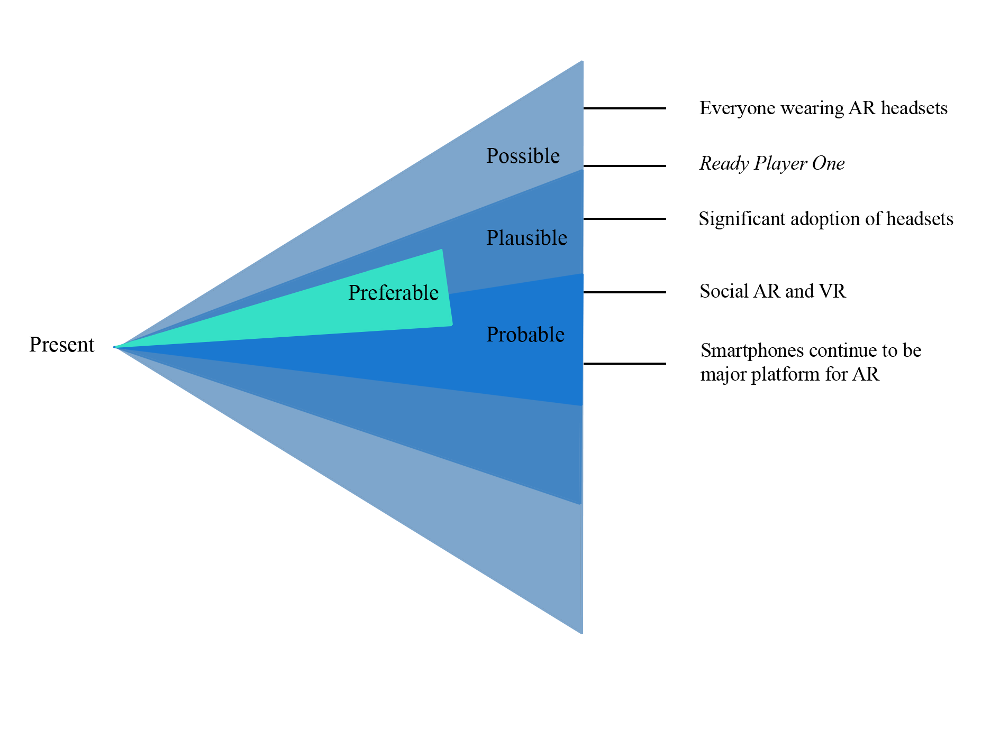

10. The Future

The myths of total AR and VR make an assumption similar to the received narrative for film: that AR and VR will each develop according to their own inner logic until they achieve perfection. In the case of AR, there will be a single mirror world that perfectly and completely reflects our lived world. In the case of VR, there will be a single metaverse, a benign version of the Matrix. We have argued throughout this book that the future of both these media will instead resemble the actual history of film since the early twentieth century. AR and VR technologies will certainly improve significantly and may eventually reach a stage of relative stability after which there are only refinements. But their genres will follow trajectories that will converge and diverge with other genres in our larger media culture. As reality media, AR and VR can continue to develop and to participate in remediating relationships with other media indefinitely.
To acknowledge a range of media futures, we appeal to a classification strategy suggested by Anthony Dunne and Fiona Raby (2013) in Speculative Everything, borrowed in turn from designer Stewart Candy. They offer a set of terms that can help to distinguish between the technological fantasies and predictions that take into account the conservatism of human users and institutions. Dunne and Raby speak of the possible, the plausible, and the probable—a classification schema they can apply to speculations about all sorts of technological, economic, and social futures. Because we are speculating here about VR and AR, the possible comprises every conceivable advance in VR and AR hardware and software: whatever has the remotest chance of occurring, the most utopian (or dystopian) predictions of how the technology will develop and be used. For example, a future in which a large number of people in the developed world choose to spend much of their time in a VR metaverse. The plausible includes future developments that seem more likely to happen: for example, the merging of AR into the general interface for mobile phones. A probable future is the adoption of VR as a dominant platform for 3-D computer games. The lines between the probable and plausible and between the plausible and possible are obviously blurry, and they become blurrier as we move further into the future. Such speculation has always been the realm of sci-fi novels and films, and it is hard to avoid sounding like science fiction when we try to imagine VR or AR in the coming decades. Novels like Snow Crash and films like Ready Player Oneare indeed sources for envisioning the possible (or something just beyond the possible) and, less frequently, the plausible and the probable.
Although still often portrayed as the “ultimate display,” VR will not usurp all the functions of other displays, from huge high-rec monitors to phones and smartwatches. Soon, however, its place among accepted media platforms will no longer require justification. VR headsets will no longer seem like toys for geeks, any more than smartwatches do now. VR will, however, continue to construct special realities, apart from the everyday. This will remain a technological necessity as long as VR headsets close us off from the physical world. VR will continue to construct special realities, apart from the everyday. VR worlds will continue to be metaphoric worlds.
 AR headsets such as HoloLens 2 and Magic Leap are still for special moments and work activities. Users put them on to play a game or repair a car engine and then take them off again to go about their day. The question is when and whether, as with conventional glasses, people will put on some future version in the morning and take them off at night. Is it plausible or probable that AR glasses will become ubiquitous? Improvements in style and comfort are inevitable, but to be worn constantly, they will have to be as comfortable and conventional as today’s glasses. It is already possible to order prescription lenses for the Magic Leap (Locklear 2018), but the 2020 version of Magic Leap reminds us of the headgear that Cyclops wears to keep his power-beaming eyes from incinerating bystanders (figure 10.1).
We have seen that VR is mainly for special experiences (games, training simulations, and so on), while AR can be both special (a visit to a museum) and everyday (directions to get you to the museum). We can envision applications in which both reality media are combined in one experience or in which a user moves back and forth between the two or between either one and a screen-based experience, such as reading a webpage. We might call these mixed or casual experiences. Putting on a VR headset for an hour to take part in a virtual journey to Mars would be a special experience. Reading a web page about the journey, getting a thirty-second VR preview of the journey, and then coming back to the web page would be casual. The New York Times has already created several such casual experiences for AR, as noted in chapter 6.
The history of film has never been one of linear improvements in technique and style, and there is no reason to think that VR and AR will have such a trajectory either. Like all earlier “new” media, VR and AR enter into chains of remediation with other current media, such as film, television, and screen-based video games. They are already refashioning genres, such as VR video games and 360-degree documentaries, out of familiar ones, such as screen-based shooter games and film documentaries. As the audiences of users and developers in AR and VR expand, their genres and styles will have an impact on the older media genres as well. There are already examples of reverse remediations back into film and television. For example, a sort of AR effect can be seen occasionally in films and television shows, where a text message that a character types on a phone floats into the air as if the audience were wearing a headset and could view location-based tweets. AR and VR are in general entering into our media economy through the genres that we identified in chapter 6, and these genres should continue to develop and ramify in the foreseeable future: games, other entertainment and art, cultural heritage, visualizing, learning, training, conferencing, navigation, and social media.
As a repository of both geolocated data and 3-D models, the cloud will be presented to users as a variety of filtered reflections of our world. It may be visualized in VR, but the more popular and useful applications will be AR, displayed for users in location. Even today’s smartphones could bring clouds of AR data to its billions of users. With AR glasses’ more sophisticated orientation, recognition, and scanning techniques, the data can be responsive to the user’s gaze and movements and connect the cloud more intimately to her and her immediate surroundings. The metaphor of the cloud is misleading in one sense. It suggests that the digital information is somewhere “up there.” But the pervasive display of information through phones and headsets will locate the data all around us. The cloud descends to ground level. Pulling the AR Cloud or clouds down through a smartphone is highly probable in the coming years. Pulling it down through AR glasses is increasingly plausible.
In addition to the three categories of the possible, plausible, and probable, Dunne and Raby (2013) have a fourth, the preferable, which is central to their concept of speculative design. They sketch their fanciful designs to illustrate possible futures (in human transportation, housing, communication, and so on). The goal of these speculations is to get people to consider what futures they would prefer and to stimulate them to work toward those futures. When we speculate about the future of public and private space in AR and VR, the question is not what is possible, because almost any scenario is technologically possible. Societies could heavily regulate the AR clouds and VR metaverses, or simply ban them; they could give corporations free rein to build them and profit from the data; they could adopt the Chinese model and incorporate them into a coherent system of social control. What is preferable depends on belief systems, as well as the politics and economics of individual countries or groups of countries. Thus, it seems very likely that issues of privacy and individual autonomy in the development of AR and VR will divide the internet into at least three zones (the US, Europe, and China) and perhaps more. There will be conflicts within each zone as the societies try to balance competing interests, as well as conflicts between zones, which is inevitable because commerce and communication will at least to some extent cross the barriers between them.
We can see that those speculations in the outer band and sometimes at the very edge of the possible belong to the myths of total AR and VR. These are the speculations that imagine AR and VR as unique and all-encompassing. Here AR and VR subsume and replace all other media, if not the lived world itself. They dominate and define our media culture. In the perfect metaverse, or even in the OASIS, all video games, narrative experiences (no need for film), learning experiences (no need for books), visual art, and so on are available in one virtual environment. In the perfect mirror world, screens for watching films and television or reading texts and making (immersive) web sites are all available through our AR glasses (Tuschi’s explicit prediction). You just call them up at any size and placement in your field of view. On the other hand, the predictions clustered in the fields of the plausible and probable are those that envision AR and VR as embedded within media culture, participating in remediating relationships and larger genres, in dialogue with forces for cultural and social change. If people continue to use smartphones rather than AR glasses, there will be times when they are not experiencing their everyday world through AR at all. If VR remains a technology for games, entertainment, and certain forms of training, work, and communication, then it continues to compete with other media and options. Not everyone chooses to put on a VR headset to watch a film. It’s not just that everyone (one hopes) takes their headsets off to take a walk in the fresh air, but also that some may still prefer to experience film in a theater or on a high-res screen in their living room. Our view is that a multiplicity of platforms and media forms will continue to characterize our media culture, just as it does today.